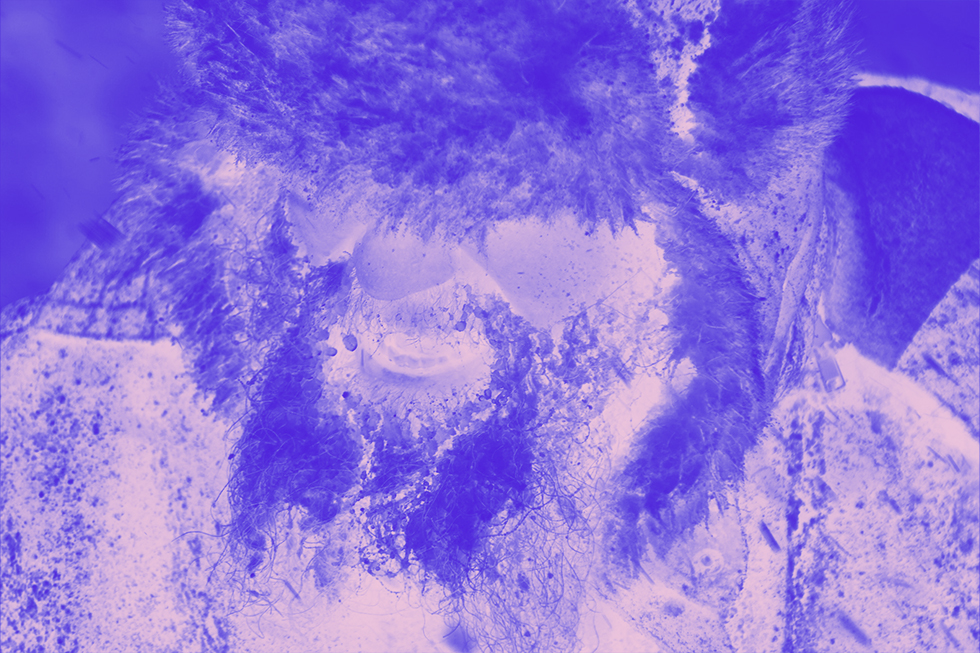

때는 내가 11살, 초등학생 시절이다.
프랑스에 사시던 이모의 덕으로 초등학교 당시 매해 여름에는 프랑스에서 방학을 보내곤 했다. 이날은 유독 날씨가 참 좋아서 사촌동생들을 이끌고 퐁피듀 센터로 가는 길이었다.
지하철에서 지금은 어떤지는 모르겠지만, 당시 프랑스 지하철은 무궁화 기차처럼 2-2 형태로 의자가 앞뒤로 마주보고 앉을 수 있는 구조였다. 지하철에서 동생들과 마주보고 앉아 대화를 나누고 있었는데, 갑자기 한 백인 여성이 우리쪽으로 다가왔다.
금발에 푸른 눈을 가진 그녀는 나를 흘끗보더니 통로쪽에 앉아있던 나를 확 미시더니 창가쪽으로 몸을 밀었다.나는 슬라이딩 되듯이,
미끄러지면서 머리를 창문에 박았다. 백인 여성은 그런 나를 흘끗 보시곤 묵묵히 책을 읽기 시작했다. 나는 굉장히 당황했지만, 어린 내 나이와 동양인이라는 사회적 지위 탓에 크게 화를 낼 수 없어 묵묵히 Rambuteau역까지 20분을 타고 갔다.
역에 도착하자 여성을 피해 후다닥 일어난 우리는 centre Georges Pompidou 출구로 걸어갔다.
걸어가는 와중에 먼가 뒤로 소름이 끼쳤다. 뒤를 돌아보자, 아까 옆자리에 앉았던 백인 여성이 자신의 친구들과 함께 우리를 노려보며 걸어오고 있었다.
놀란 나는 동생들을 데리고 전력질주를 하게 되었고 출구로 재빠르게 계단을 올랐다.
그러던 그 때,
그 순간 뒤에서는 돌이 날아왔다.
날라온 돌은 내가 앞앞 계단으로 떨어졌고, 다행히 나는 맞지 않았다. 우리를 보며 동양인 비하 발언을 시끄럽게 하던 그들을 뒤로한채 우리는 무사히 도망쳤지만, 그 순간의 긴장과 위험은 아직도 잊을 수 없다.

유럽하면 가장 먼저 생각나는 것은 아무래도 멋진 풍경이지 않을까. 그런 멋진 풍경을 꿈꾸고 있는 당신에게 행복한 여행이 되려면 이 사실은 꼭 알고 있어야 한다.
중학생 때 가족들과 이탈리아로 여행을 떠났다. 피렌체에서 베네치아로 이동하기 전, 두오모 광장에서 언니와 나는 젤라또가 먹고 싶어 부모님 곁에서 벗어나 젤라또 가게를 향해 가고 있었다. 아무래도 이탈리아에 왔으면 꼭 젤라또를 먹어봐야 한다고 생각했고, 이탈리아 다녀온 이모가 아이스크림을 싫어하는 사람마저 사랑할 수밖에 없는 맛이라 극찬을 했기에 들뜬 마음으로 젤라또 가게를 찾아다녔다. 광장에는 사람이 많았고, 두오모 성당 바로 앞에 있는 젤라또 가게에는 사람이 너무 많아 구글 평점이 높은 젤라또 가게로 가기 위해 우리는 골목으로 들어갔다. 이 때 이 골목으로 들어가지 말았어야 했다…..
신나게 젤라또 가게를 향해 걸어가던 우리는 뒤쪽에서 갑자기 내 가방을 잡아 끄는 손길을 느꼈다. 그리고 갑자기 어디선가 4명의 사람들이 뛰어오더니 내 몸을 누르고 우리의 가방과 외투를 벗겼다. 나름 저항을 하긴 했지만, 정신을 차리자 그들의 유일한 자비인 핸드폰만을 손에 꼭 쥔 채 빈털터리가 되었다..
이 때의 경험으로 이 뒤로는 소매치기를 당하지 않게 되었다.
작년 한 겨울 아침, 폭설,한파특보에 눈을 뜬 나는 창밖으로 못 보던 규모의 눈이 하늘에서 쏟아지는 것을 보고 나는 입이 다물어지지 않았다. 그러나 나는 이번 여행의 목표인 시라카와고를 가기 위해 거침없이 밖으로 나왔다. 쉴 틈도 없이 계속 내리는 눈 덕에 나는 눈을 뜨기 힘들어 검정색 선글라스를 끼고 전망대를 오르기로 마음을 먹었다. 전망대까지의 셔틀 버스는 미치게 내리는 눈 때문에 취소되었고 나는 결국 전망대까지 걸어서 올라갈 수 밖에 없게 되었다. 전망대로 향하는 도중, 날씨는 점점 더 악화되어갔다. 이 때 다시 한 번 생각해보았어야 했다. 왜 셔틀버스가 취소되었는지를…… 그때까지는 단지 눈으로 가득한 온세상을 한 눈에 담을 생각 뿐이었다.
그러던 그 때 갑자기 큰 나무에서 눈이 쏟아져 내렸다.
나는 당황해서 옆으로 넘어졌고, 눈을 뜨고 나니 눈더미에 반쯤 묻혀 세상과 고립되었다. 처음에는 나에게 무슨 일이 일어났는지 얼떨떨 했다. 내가 살아서 한국에 갈 수 있을까? 이대로 얼어죽는건가? 그동안 착하게 살걸….
그렇게 불안해하면서 오만가지 생각들을 하다 오면서 버스에서 본 눈사태 대처요령이 생각났다.

나는 미친듯이 소리를 치면서 눈더미에 벗어나려 묻힌 다리를 마구 움직였고, 다행히 눈더미에서 빠져나올 수 있었다. 하지만 나에게 닥친 시련은 이게 끝이 아니었다. 눈 속에 있던 탓에 냉동고에 갇힌 사람마냥 몸이 얼어붙었고, 가방이고 신발이고 전신이 얼음으로 뒤덮여 있었다. 설상가상으로 미치도록 내린 눈들이 표지판들을 가려버려 나는 산 중턱에서 홀로 방향을 잃었다… 나는 결국 목표하던 전망대는 포기하고 올라온 길을 따라 내려오면서 눈으로 인해 가려진 땅들을 찾기 위해 손과 발 모두 사용해서 눈썰매를 타듯이 네발로 내려왔다. 무슨 눈사람같은 몰골로 다시금 전망대 출발지에 도착하게 되었고, 출발지에는 나처럼 눈사람이 된 사람 투성이였다. 그 때서야 나의 몰골을 깨달은 나는 출발지에 있던 볏짚 빗자루를 이용해 몸을 퍽퍽 털어냈다. 그렇게 눈을 털고 난 후 나는 근처 카페에 들어가 몸을 녹이며 다시금 눈사람이 아닌 사람으로 돌아오게 되었다. 그리고 다시는 폭설 주의보 때 집밖을 나가지 않기로 다짐했다.